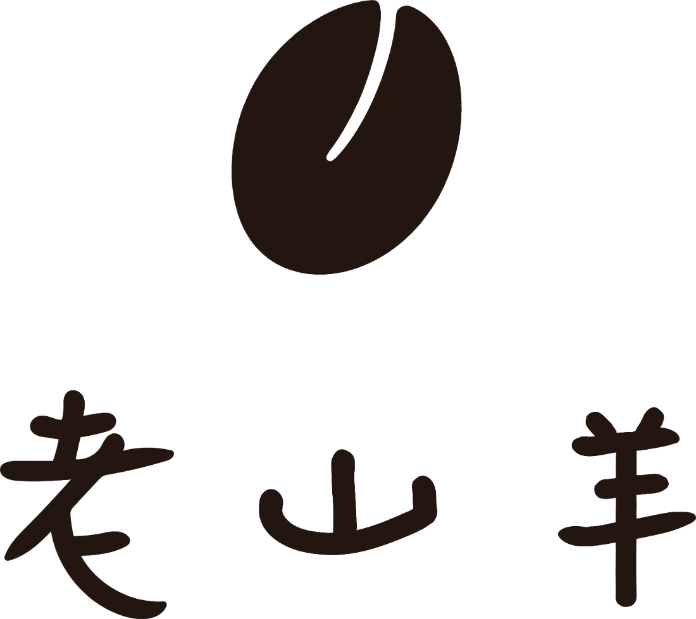

OlD GOAT COFFEE・LINKOU
林口長庚商圈
不限時咖啡廳與早午餐
林口長庚旁的咖啡與早午餐小店，主打現做三明治、漢堡、沙拉與咖啡飲品；內用、外帶、外送都方便。
咖啡・輕食・早午餐
復興北路 6 巷 47 號
營業時間
平日 06:30–16:30・假日 08:30–17:30
不定期公休，供餐至打烊前30分
不定期公休，供餐至打烊前30分
取餐方式
內用・外帶・外送・預定快取
線上訂購、來店取貨
線上訂購、來店取貨
期間限定
芭氣美式 NT$150
紅心芭樂與義式濃縮，搭配沁涼氣泡水的台式浪漫。
POPULAR
熱門品項
內用須知
各項優惠與規則，老山羊保有解釋與修改之權利。
桌邊掃碼點餐
內用請於桌上掃碼點餐，結帳後為您出餐。
客滿限時 120 分鐘
平常不限時；遇客滿內用限時 120 分鐘，中途加點可重新計時。
飲品續杯折 10 元
同一次內用續杯飲品折 10 元，不得與其他優惠並用。
新鮮現做
三明治、漢堡、沙拉與厚片，兼顧飽足與清爽健康。
咖啡與特調
經典美式、拿鐵，以及創意特調咖啡；鮮奶皆使用嚴選動物福利鮮奶。
舒適空間
Wi-Fi 6 + 1Gbps光纖網路與插座
適合聚會聊天、閱讀與工作。
點餐方便
支援線上預訂、來店取餐
外帶與企業外送。

「山羊踏實走路，我們踏實做餐。」
從清晨的一杯美式，到份量充足的三明治、漢堡與沙拉，每份餐點都新鮮現做——適合上班前快速帶走，也適合坐下來慢慢享用。
REVIEWS
客人怎麼說
以下皆為 Google 地圖上的真實評論，原文引用。
★★★★★
傑森・Google 評論
★★★★★
李ㄚ君（Bubu）・Google 評論
★★★★★
mindy・Google 評論
★★★★★
ms0085386・Google 評論
★★★★★
陳兔兔ttuu0802・Google 評論
★★★★★
James Tsai・Google 評論
★★★★★
Chiu Miranda・Google 評論
★★★★★
Yang・Google 評論
★★★★★
SN Chen・Google 評論
★★★★★
YU W・Google 評論
★★★★★
きゅう・Google 評論
★★★★★
Minin Lang・Google 評論
★★★★★
AYA XY・Google 評論
★★★★★
Henry Lin・Google 評論
★★★★★
歐拉夫・Google 評論
★★★★★
到 Google 地圖評價
喜歡老山羊嗎？請給予我們一點鼓勵。
有您的支持，是小店走下去最實在的動力。